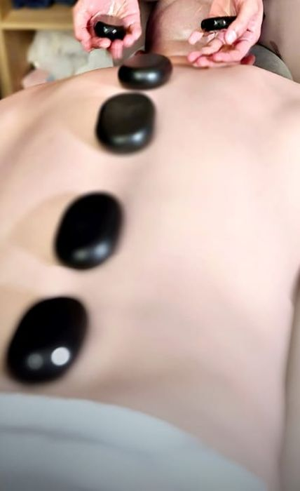
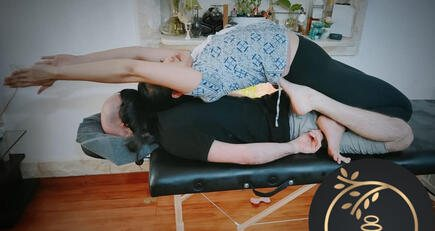

תאילנדיThai
מתיחות ולחיצות בשיטה התאילנדית.Stretches and pressure, the Thai way.
קונספט לדוגמה שנבנה עבור Sun Thai Massage Haifa · זה אינו האתר הרשמי של העסקA sample concept built for Sun Thai Massage Haifa · This is not the business’s official website
Sun Thai Massage Haifa · תאילנדי, שבדי, רקמות עמוק או משולב, לפי הבקשה שלך.Sun Thai Massage Haifa · Thai, Swedish, deep tissue or combined, the way you ask for it.
5.0· 36 ביקורות בגוגל· 36 Google reviews


תבליט לוטוס על הקיר, מגבות מגולגלות, אבנים חמות על הגב.A lotus relief on the wall, rolled towels, warm stones along the back.
ארבע שיטות, שלושה משכי זמן.Four styles, three lengths.
מתיחות ולחיצות בשיטה התאילנדית.Stretches and pressure, the Thai way.
תנועות ארוכות ורכות עם שמן.Long, soft strokes with oil.
לחץ איטי ועמוק אל תוך השריר.Slow, deep pressure into the muscle.
שילוב של השיטות, לפי מה שביקשת.A mix of the styles, as you ask.
6090120דקות, לבחירתךminutes, your pick
מעסה תאילנדית בחיפה. מדברת תאילנדית ואנגלית.A Thai massage therapist in Haifa. She speaks Thai and English.
״סאן הביאה את המסג' התאילנדי לישראל.״“Sun brought Thai massage to Israel.”
בוחרים, והטקסט נכתב לבד.Pick, and the text writes itself.
ההודעה נפתחת מוכנה בוואטסאפ.The message opens ready in WhatsApp.
Sun Thai Massage Haifa · שדרות מוריה 116, חיפהSun Thai Massage Haifa · 116 Moriah Blvd, Haifa
חד משמעית המקום הכי טוב בארץ, סאן משקיעה ונותנת את הלב והנשמה בכל טיפול, המקום יפה, נקי ואסתטי, סאן מעסה מקצועית, ויודעת לתת טיפול נכון ומדוייק לכל בעיה. כשיוצאים מהטיפול מרגישים הקלה והרגשה טובה! שווה לבוא אפילו מרחוק! ממליץ בחום!Without a doubt the best place in the country. Sun puts her heart and soul into every treatment. The place is beautiful, clean and tasteful. Sun is a professional masseuse and knows how to give the right, precise treatment for every problem. You leave the treatment feeling relief and feeling good! Worth coming even from far away! Warmly recommended!
אני סובל מבעיות בגב התחתון, אחרי שהייתי אצל סאן מספר פעמים, הרגשתי שיפור ניכר ברמת הכאבים. אישה חביבה מאוד, דוברת אנגלית ותאילנדית (למי שמבין). עושה עבודתה נאמנה ובאמת עושה רושם שאכפת לה מהלקוחות. ממליץ בחוםI suffer from lower back problems. After going to Sun a few times, I felt a marked improvement in the level of pain. A very kind woman, speaks English and Thai (for those who understand). She does her work faithfully and really gives the impression that she cares about her clients. Warmly recommended
ואו. אין עיסוי תאילנדי אמיתי בארץ כמו זה!! סאן צריכה להיות מעסה של בית מלוכה. נקי. נעים. אישה טובה. מקווה שתצליח לפתוח ספא משלה ותכשיר מעסות כמו שצריך! מ ו ש ל םWow. There’s no real Thai massage in the country like this one!! Sun should be a masseuse to a royal house. Clean. Pleasant. A good woman. I hope she gets to open her own spa and train masseuses properly! P e r f e c t
זהו, לא צריך לטוס לתאילנד, כדי לקבל מסג' תאילנדי מקצועי. סאן הביאה את המסג' התאילנדי לישראל. סופר מקצועית, עם תעודות, חזקה, יודעת לאתר במהירות את הבעיה, המקום נקי למהדרין, אווירה מרגיעה. ממליץ בחום.That’s it, you don’t need to fly to Thailand to get a professional Thai massage. Sun brought Thai massage to Israel. Super professional, with certificates, strong, finds the problem quickly, the place is spotlessly clean, a relaxing atmosphere. Warmly recommended.
5.0כל הביקורות בגוגלAll reviews on Googleאני אוהבת מאוד מסאג' ואני גם מאוד ביקורתית כלפי המקומות שאני הולכת אליהם ואני חייבת לומר שהמסאג' היה מעולה ומדויק. מומלץ בחום! ובנוסף על כל זה, גם השירות היה מדהיםI really love massage and I’m also very critical of the places I go to, and I have to say the massage was excellent and precise. Warmly recommended! And on top of all that, the service was amazing too
תאילנדי, שבדי, רקמות עמוק או משולב, לפי בקשת הלקוח.Thai, Swedish, deep tissue or combined, as the client asks.
60, 90 או 120 דקות.60, 90 or 120 minutes.
בהודעת וואטסאפ או בשיחה ל-058-545-3838.By WhatsApp message or a call to 058-545-3838.
לפי הביקורות, סאן מדברת תאילנדית ואנגלית.According to the reviews, Sun speaks Thai and English.
חיפה. ראשון עד שישי, שבת סגור.Haifa. Sunday to Friday, closed on Saturday.